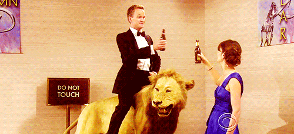
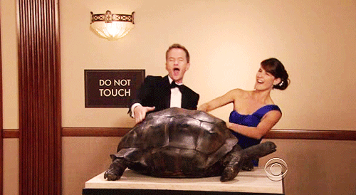

Waarin wiikkowiesti 7/2018 - Vuosijuhlaviikko!
25.02.2018 fuksit / wiikkoviesti / muistinnollaus / työvoima / lakkitilaus / museokierrokset / ISO /
Hei, fuksi!
Paljon on taas kerennyt tapahtua: laskettiin urheasti mäkeä Laskiaisriehassa, selvittiin tenttiviikosta, ensimmäinen museokierros pidettiin ja ISOhenkilöksi ilmoittatuminen aukesi! Jos et ole vielä ilmoittautunut ISOksi tai liikuntatutoriksi, voin lämpimästi, sydämeni pohjasta, suositella rooleja. Lähde tekemään ensi syksyn fuksien vuodesta yhtä upea (ja upeampi!) kuin omasi.
Tällä viikolla koittaa kauan odotettu Muistinnollaus! Sinun pitäisi nyt olla saanut tietoa työvuorostasi. Minä ainakin olen ihan täpinöissäni tulevasta viikonlopusta! Vuosijuhlaviikkoa juhlistetaan myös tiistaina killan perinteisen Otaniemipelin merkeissä. Peliä voi tulla seurailemaan, tai rohkeimmat jopa pelaamaan!
Huomaattehan myös, että teekkarilakin ensimmäinen tilausjakso päättyy nyt keskiviikkona 28.2. Tämän jälkeen Wahlmanin lakki hieman kallistuu. Tilaaminen on mahdollista kuitenkin vielä torstaihin 8.3. asti!
<3 Milla
Sisällysluettelo
- Tärkeää
- Museokierrokset
- Fuksimajurin tervehdys: lakkitilausasiaa!
- Fuksi- ja kilta-asiat
- ISOhenkilöksi 2018?
- Titeenien taistot pe-su 16.3.-18.3. @ lappeen Ranta
- Loppunurkkaus
Tärkeää
1. Museokierrokset
On koittanut museokierrosten aika! Polyteekkarimuseolla vierailu on olennainen osa teekkarikulttuuriin tutustumista, ja siksi joka tapauksessa pakollinen suoritus teekkarilakin hankkimista varten, vaikkei muita fuksipisteitä keräisikään!
Mikäli et pääse osallistumaan millekään killan yhteiselle kierrokselle, museokierros järjestetään myös joka sunnuntai klo 12:00. Olethan ajoissa paikalla!
Kahden museokierroksen ilmoittautuminen on yhä auki. Voit ilmoittautua kierrokselle alla listatuista linkeistä.
- ti 6.3. klo 17:00, https://tietokilta.fi/tapahtumat/ilmot/museo20183
- ti 13.3. klo 16:00, https://tietokilta.fi/tapahtumat/ilmot/museo20184
2. Fuksimajurin tervehdys: lakkitilausasiaa!
Arwon fuksit.
Olen saanut ilolla seurata edesottamuksianne läpi syksyn. Tähänastisessa toiminnassanne olette osoittaneet erinomaista teekkarihenkisyyttä ja reipasta tekemisen meininkiä. Puhun koko fuksitoimikunnan puolesta, kun sanon, että olemme teistä kaikista erittäin ylpeitä. En ole kuitenkaan vielä täysin vakuuttunut siitä, kannattaako teille Wappua järjestää. Tulevat tekonne sen ratkaiskoot.
Mikäli tulen myöhemmin päätöksen Wapun järjestämisestä tekemään, on kuitenkin täysin selvää, että tulevat teekkarit tarvitsevat puhtaanvalkoiset tupsulakit juhlapäivää ja sen jälkeistä teekkarielämää varten. Tästä syystä olen päättänyt antaa teille jo nyt mahdollisuuden tilata teekkarilakin. Lakin tilataksenne suorittakaa seuraavat toimenpiteet:
1) Suuntaa AYY:n Otaniemen palvelupisteelle (Otakaari 11) lakkia sovittamaan. Älä tilaa teekkarilakkia ylioppilaslakin koon perusteella. Vaikka tupsu veikeä onkin, saattaa se lakkia kummasti kallistaa, siksi onkin tärkeää, että löydät juuri sinulle sopivan lakin. Lakkia pääsee sovittamaan kulkemalla sisäänkäynnistä suoraan eteenpäin portaiden taakse, jossa on kaappiin valkoisella lapulla merkitty "Teekkarilakkien sovitus". Sinun ei tarvitse mennä erikseen palvelupisteelle, vaan voit sovittaa lakkia omatoimisesti.
2) Päätä, kumman valmistajan lakin haluat: Velmard vai Wahlman?
3) Suuntaa osoitteeseen http://lakkitilaus.ayy.fi ja tilaa lakki. Lomake aukeaa 1.2. klo 12:00. Tilaaminen vaatii sisäänkirjautumisen Aalto-tunnuksilla. HUOM! Tilaus on sitova, joten ole huolellinen sitä tehdessäsi!
4) Huomioi tilausajat! Mitä aikaisemmin Wahlmanin lakin tilaat, sitä halvempi lakki on. Velmardin lakki on samanhintainen koko tilausjakson ajan.
5) Lakkien tilausajat ja hinnat ovat seuraavat:
a) Wahlman:
Tilausjakso 1: 1.2.-28.2. Hinta: 105,00€ / TF-malli: 117,00€
Tilausjakso 2: 1.3.-8.3. Hinta: 120,00€ / TF-malli: 137,00€
b) Velmard:
Tilausjakso: 1.2.-8.3. Hinta: 50,00€
6) Tilaamisen jälkeen saat sähköpostitse vahvistuksen tilauksestasi. Lakin maksuohjeet lähetetään myöhemmin oodissa ilmoittamaasi sähköpostiosoitteeseen.
Tekniikan kehdossa
Lauri Nyrhilä
Fuksimajuri
"Suomessa kaikki hullut saavat valkolakin. Häiriintyneimmät heistä merkitään tupsulla."
Teekkarilakista:
Teekkarilakki eli teekkarien tupsulakki on tekniikan opiskelijoiden ylin ja arvokkain tunnus. Lakilla on pitkä historia, ja nykymuotoinen teekkarilakki juontaa juurensa vuoteen 1893, eli se täyttää tänä vuonna 125 vuotta. Juhlavuoden kunniaksi kirjaillaan lakin sisävuori kultaisella tähdellä. Lakin ulkomuoto on mallisuojattu ja sen valmistusta valvotaan lisensseillä.
Teekkarilakki on kesälakki ja sen käyttöaika on 1.5.-30.9. Talvisaikaan teekkarilakin käyttöoikeutta voi anoa Teekkarijaostolta lakin arvolle sopiviin tilaisuuksiin kuten yritysexcursioille tai teekkarihäihin. Sitsit tai illanistujaiset eivät ole tällaisia tapahtumia.
Kanna teekkarilakkia aina ylpeydellä ja muista käyttäytyä lakki päässä teekkarilakin arvolle kuuluvalla tavalla. Muuten paha sinut periköön ja fuksimajuri tupsulakkisi vieköön!
Fuksi- ja kilta-asiat
1 ISOhenkilöksi 2018?
On jälleen aika valita uudet fiksut ja filmaattiset ISOhenkilöt!
Näyttääkö ensi vuosi tyhjältä? Oliko fuksivuotesi parasta ikinä? Haluaisitko päästä kokemaan sen parhaat puolet uudestaan uusien fuksien kanssa? Lähde siis mukaan killan ISOtoimintaan ja tee seuraavien fuksien vuodesta vielä omaasikin parempi!
Ensi syksynä kiltaan tulee myös upouuden englanninkielisen Data Science- linjan fuksit, joille tarvitaan englanninkielentaitoisia dataISOja, joten nyt on priima mahdollisuus päästä treenaamaan kielitaitoa ja samalla vaikuttamaan uuden linjan fuksikasvatukseen heti alusta asti.
Voit silti ilmoittautua mukaan osoitteessa http://tietokilta.fi/tapahtumat/ilmot/isoilmo18.
Lisätietoja ISOtoiminnasta ja ilmoittautumisesta saa: Elisa Naskali @enmayay isopomo[at]tietokilta.fi
2 Titeenien taistot pe-su 16.3.-18.3. @ lappeen Ranta
TITEENIT!
On aika kaivaa sotakirves hallituskopista ja nousta bussiin, kun Titeenien Taistot tulevat taas, tällä kertaa lappeen Rannassa!
Titeenien Taistot ovat Suomen tietoteekkareitten vuosittainen leikkimielinen kilpailu, jossa pääset tutustumaan ja pitämään hauskaa muiden tietoteekkareiden kanssa: Tampereelta, Turusta, Oulusta ja tietenkin Lappeenrannasta.
Matkamme alkaa 16.3. Otaniemestä, josta lähdemme bussilla kohti Lappeenrantaa. Ensimmäiselle 20 halukkaalle on tarjolla mahdollisuus päästä sitseille (hinta 25 euroa), muille on tarjolla muuta ohjelmaa. Paluu Otaniemeen tapahtuu 18.3. Lisää tietoa ohjelmasta tulee lähempänä.
Bussit lähtevät Otaniemestä perjantaina 16.3. noin klo 14 Teekkarikylän päätepysäkiltä ja paluu lähtee sunnuntaina noin puolenpäivän aikaan. Bussimatkan hinnaksi tulee noin 20 euroa, riippuen osallistujamäärästä.
Ilmoittaudu mukaan: https://tietokilta.fi/tapahtumat/ilmot/titeenit2018
Loppunurkkaus
Tältäkö näyttää fuksit Museokierroksella...?
 